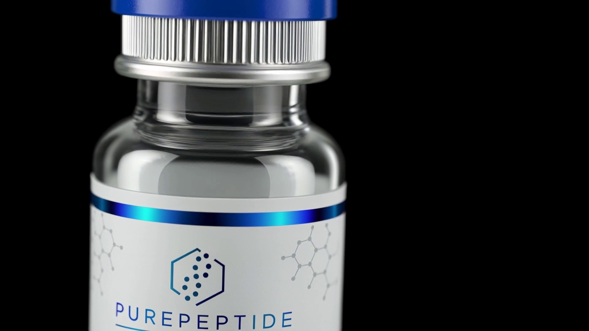
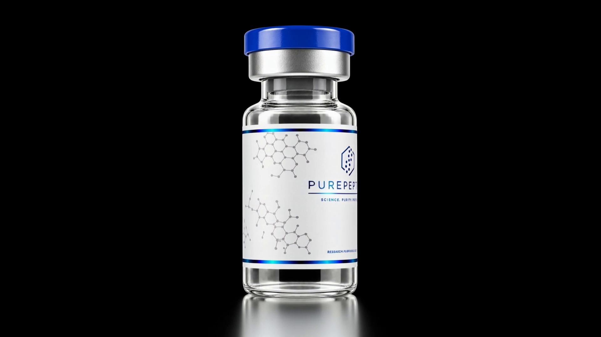

S01
A droplet of light
S02
Printed on glass

Independently
tested.
JANOSHIK ANALYTICAL
99%
HPLC PURITY,
MINIMUM
S07
Frost, the arrival
S08
The slow show, the wake
S09
The cart does the math
S10
The math, in depth
S11
Purity, proven.
S12
Lights out, STOP
S13
End card